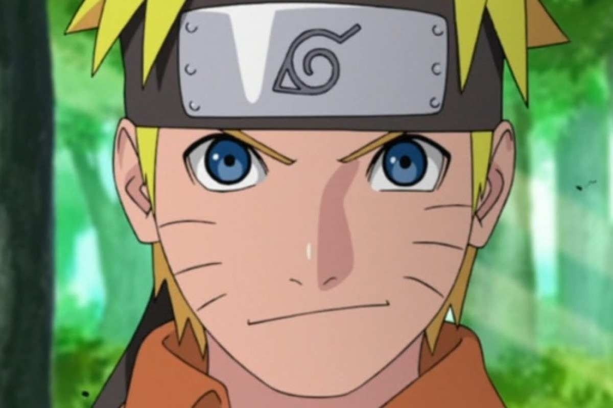

Kakarotto
Goku é apresentado como um menino estranho, com rabo de macaco e força sobre-humana. Conforme a história se desenrola, é revelado que ele descende de uma raça fictícia chamada Saiyajins, uma das raças mais poderosas do universo.
Monkey D. Luffy
Rei Dos Piratas
Luffy, também conhecido como "Luffy do Chapéu de Palha" ou "Chapéu de Palha", é um pirata e o principal protagonista do anime e mangá One Piece. Ele é o fundador e o capitão do cada vez mais infame e poderoso Piratas do Chapéu de Palha, bem como um de seus quatro principais lutadores.
Tanjiro Kamado
Hinokami Kagura
Tanjiro é descrito como possuindo olhos muitos gentis e uma personalidade compassiva. É um jovem determinado que não desiste do que almeja alcançar, com um bom exemplo disso sendo sua busca pela cura de Nezuko. Mesmo sendo muito forte, ele não se importa ou se vê mais fraco ao pedir ajuda quando necessita.

Uzumaki Naruto
Hokage
Naruto Uzumaki é apresentado como um jovem rapaz louro, cabelos arrepiados e olhos azuis. Ele frequentemente veste uma jaqueta laranja. Após a sua graduação ninja ele começa a usar um protetor de testa que denota a sua posição como um ninja da Vila Oculta da Folha.